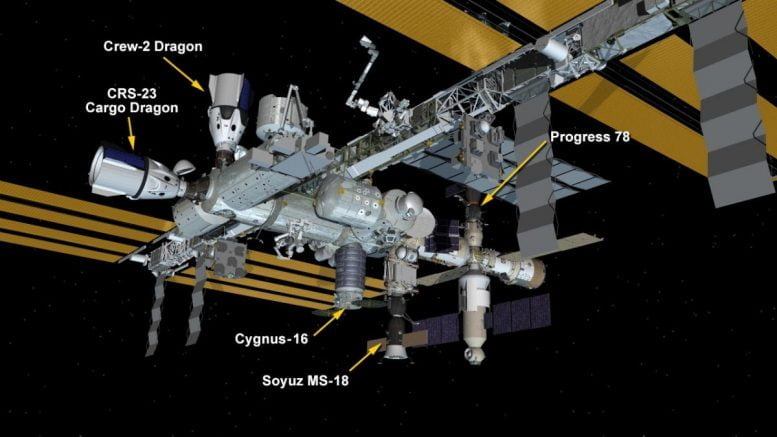

SpaceX ကုန်တင် အာကာသယာဉ် ဖြစ်တဲ့ SpaceX Dragon ကုန်တင် အာကာသယာဉ်ဟာ အပြည်ပြည် ဆိုင်ရာ အာကာသ စခန်းမှာ အောင်မြင်စွာ ဆိုက်ကပ်နိုင်ခဲ့တယ်လို့ သိရပါတယ်။ ဒီ ဆိုက်ကပ်မှုကို ဩဂုတ်လ ၃၀ ရက်နေ့ အမေရိကန် အရှေ့ပိုင်း စံတော်ချိန် မနက် ၁၀ နာရီ ၃၀ မိနစ်မှာ ပြုလုပ်ခဲ့တာ ဖြစ်ပါတယ်။ ဒီဆိုက်ကပ်မှု ပြုလုပ်တဲ့အ ချိန်မှာ အပြည်ပြည် ဆိုင်ရာ အာကာသယာဉ်ဟာ ဩစတြေးလျ နိုင်ငံ အနောက်ပိုင်းရဲ့ ကောင်းကင်မှာ အမြင့်မိုင် ၂၆၀ အမြင့်မှာ ပျံသန်းနေတဲ့ အချိန် ဖြစ်ပါတယ်။
ဒီ ဆိုက်ကပ်မှု တစ်ခုလုံးကို လူက ထိန်းချုပ်မှု မရှိပဲ ကွန်ပြူတာက အစအဆုံး ထိန်းချုပ်သွားတာ ဖြစ်ပါတယ်။ ဒါပေမယ့် လိုအပ်ရင် လူက ဝင်ပြီး ထိန်းချုပ်နိုင်အောင်တော့ မြေပြင်က နာဆာ အဖွဲ့သားတွေက စဉ်ဆက်မပြတ် စောင့်ကြည့်နေ ခဲ့ပါတယ်။
အခု SpaceX ရဲ့ ကုန်တင်ယာဉ်ဟာ နာဆာကနေ ကန်ထရိုက် စနစ်နဲ့ ငှားရမ်း အသုံးပြုတဲ့ ယာဉ် ဖြစ်ပါတယ်။ ဒီ ခရီးစဉ်မှာ စုစုပေါင်း ကုန်ချိန် ပေါင် ၄,၈၀၀ ခန့် (၂ တန်ခွဲခန့်) အလေးချိန်ရှိတဲ့ ကုန်ပစ္စည်းတွေကို တင်ဆောင်သွားခဲ့ပါတယ်။ ဒီပစ္စည်းတွေ ထဲမှာ သိပ္ပံ စမ်းသပ်မှုတွေအတွက် ပစ္စည်းတွေ၊ အာကာသ သူရဲကောင်းတွေ အတွက် အစားအသောက်နဲ့ အသုံးအဆောင်တွေ၊ အာကာသယာဉ် အတွက် အပိုပစ္စည်းတွေ ပါဝင်ပါတယ်။

အပြည်ပြည်ဆိုင်ရာ အာကာသ စခန်း (International Space Station) မှာ ဆိုက်ကပ်ထားကြတဲ့ အာကာသယာဉ်များ (Photo: NASA)အခု ဒီခရီးစဉ်ဟာ SpaceX ရဲ့ အပြည်ပြည်ဆိုင်ရာ အာကာသ စခန်းကို သွားတဲ့ ပထမဆုံး ခရီးစဉ်တော့ မဟုတ်ပါဘူး။ အခု ခရီး စဉ်နဲ့ဆို စုစုပေါင်း ၃ ခေါက်ရှိသွားပြီ ဖြစ်ပါတယ်။ အခု ခရီးစဉ်ကို မူကလ ဩဂုတ်လ ၂၈ ရက်မှာ လွှတ်တင်ဖို့ ရည်မှန်းထာခဲ့ပေမယ့် ရာသီဥတု အခြေအနေကြောင့် ဩဂုတ်လ ၂၉ ရက်နေ့မှပဲ လွှတ်တင်နိုင်ခဲ့ပါတယ်။
ဒီ ကုန်တင်ယာဉ်ကို အာကာသထဲကို လွှတ်တင်ပေးခဲ့တဲ့ ဒုံးပျံကတော့ SpaceX ရဲ့ Falcon 9 (လင်းယုန် အမှတ် ၉) ဒုံးပျံပဲ ဖြစ်ပါတယ်။
အသွား ခရီးစဉ်မှာ တင်ဆောင်သွားတဲ့ ကုန်ပစ္စည်း အမျိုးအမည်တွေကို အောက်ကပုံမှာ တွေ့မြင်နိုင်မှာ ဖြစ်ပါတယ်။
အပြန်ခရီးမှာလဲ အာကာသ စခန်းပေါ်က မလိုအပ်တော့တဲ့ ပစ္စည်းတွေ ကို ပြန်လည် သယ်ဆောင်ပြီး ဆင်းသက်မှာ ဖြစ်တယ်လို့ သိရပါတယ်။
SpaceX Dragon Cargo ယာဉ်နဲ့ သယ်ဆောင်သွားတဲ့ ကုန်စ္စည်း စာရင်း (Photo: SpaceX)Reference:
SpaceX Cargo Dragon Successfully Docks to International Space Station | SciTech Daily